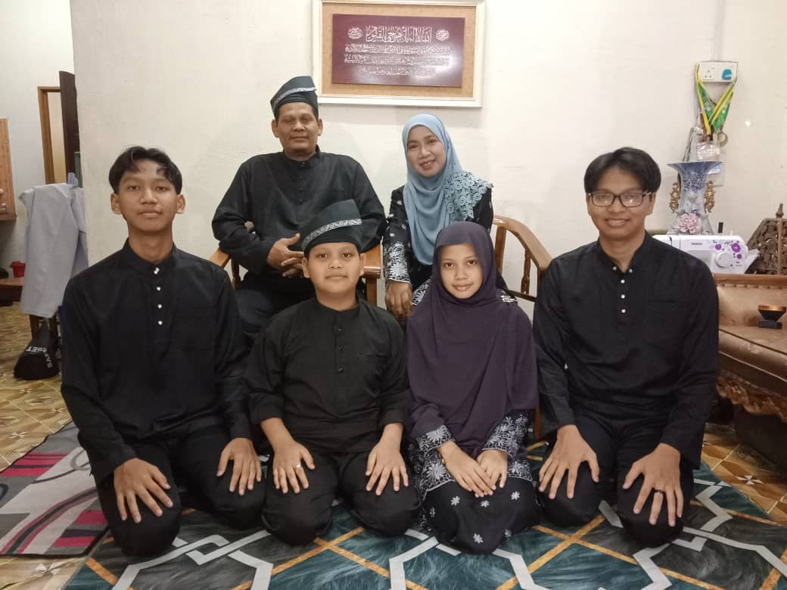
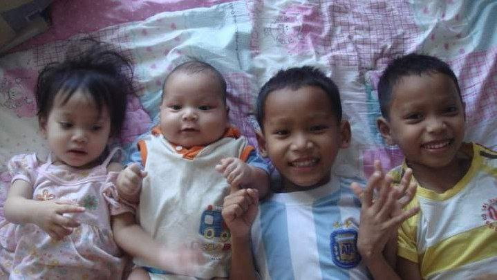

| Name | Age | Position |
|---|---|---|
| Md Suhaili Bin Hamid | 50 | Dad |
| Muslira Binti Muhamad | 45 | Mom |
| Muhammad Irfan Danial Bin Md Suhaili | 20 | First son |
| Muhammad Izzat Danial Bin Md Suhaili | 20 | Second son |
| Nur Irdina Damia Bin Md Suhaili | 15 | First Daughter |
| Muhammad Iqbal Danial Bin Md Suhaili | 14 | Third Son |

This is my family. My father's name is Md Suhaili Bin Hamid, and my mother's is Muslira Binti Muhamad. My twin brother's name is Muhammad Irfan Danial. He's the same age as me: 20. Next is my younger sister, Nur Irdina Damia, and last but not least, my younger brother, Muhammad Iqbal Danial. One of our favorite traditions is celebrating birthdays with a cake or go holiday. In my family, we believe in love, respect, and standing by each other no matter what. They are my biggest strength and happiness.
This a photo from when we were still kids.My siblings, each bring their own unique energy and personality into our family. My younger sister is quiet and creative; she loves to draw and can spend hours lost in her imagination. My baby brother, on the other hand, is the funniest and most cheerful, always making us laugh with his adorable antics. My two older brothers are protective and adventurous, always coming up with new games or ideas to keep us entertained. Together, we share countless memories, from watching movies on lazy weekends to playing games and laughing until our sides hurt. What I love most about them is how supportive we are of one another, no matter the situation. Life with them is full of joy, love, and endless adventures, and I couldn’t imagine it any other way.